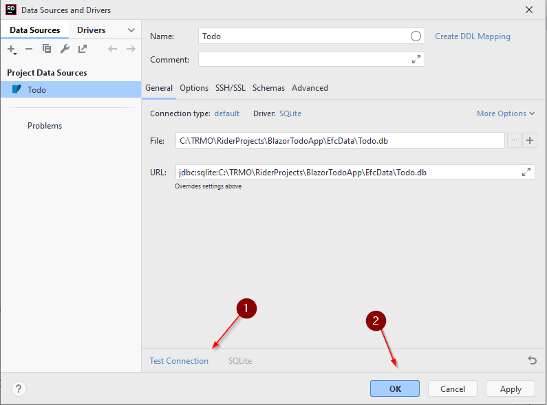

- 1 Introduction
- 2 New component
- 3 Adding dependencies
- 4 Installing db tools
- 5 DbContext
- 6 Generating a migration
- 7 Applying a migration
Introduction
In this tutorial we will add Entity Framework Core (henceforth "EFC") with SQLite as the data storage, instead of the json-file storage system currently in use.
Below is the layered diagram, you should be familiar with it by now.
To the left, is your current project. The right side version is the result of this tutorial

We will be working within the green box at the bottom, i.e. we are swapping out the data access layer.
Because of the IDAO interfaces (or whatever you've called them), we should not have to touch anything above.
The current data access is isolated in a component, and the new data access will be in another component. To keep things nicely organized.
The result of this tutorial is found here on GitHub.
EFC Component
We are going to need a new component, it's a class library, you could call it EfcData.


The class library comes with a file, Class1.cs, or similar, just delete it.
Adding Dependencies
We are going to use Entity Framework Core and SQLite, so we are going to have to add some NuGet packages.
NuGet Manager
Open the NuGet package manager:

This should show a window in the bottom half of Rider.
Alternatively, there should be a NuGet button in the bottom row of Rider.
Packages
Once the window is open, you need to add 3 packages (see how further below):
- Microsoft.EntityFrameworkCore
- Microsoft.EntityFrameworkCore.Design
- Microsoft.EntityFrameworkCore.Sqlite

Notice the progress bar at the bottom after accepting installation.
Pick the latest version which matches your .NET version. E.g. if you're on .NET6, pick version 6.x.x.
Don't pick the preview versions.
For all packages, the version should be the same.
Verify
You should be able to verify the installed packages and versions:

Internal Dependency
We have added external packages. We also need an internal dependecy: EfcData -> Domain. We need access to the model classes and interfaces in the Domain component.
Add this reference.
Installing Tools
You will need to install a command line interface tool, which is used when creating/updating the database.
Open the terminal in Rider:

In the terminal type (it shouldn't matter which directory, you're in):
dotnet tool install -g dotnet-ef

This will install the db tools. The -g means it is a global installation, so all future solutions should also have this tool installed.
Adding DbContext
In your new component, EfcData, add a new class. You could name it TodoContext.
This class will have a responsibility similar to your FileContext class, i.e. provide interaction with the data storage.
It must inherit from DbContext.
In this class you define DbSets for the object types, you want to be able to access in your database.
In this tutorial, we just have the Todo object, but you might also have a User object. If the project scaled up, we might have different TodoLists, owned by different Users. Maybe you'll add this later.
Specifying the Database
We need to specify which database to use. That's done in the inherited method OnConfiguring(...).
The class currently looks like this:
public class TodoContext : DbContext
{
public DbSet<Todo> Todos { get; set; }
protected override void OnConfiguring(DbContextOptionsBuilder optionsBuilder)
{
optionsBuilder.UseSqlite("Data Source = Todo.db");
}
}
The DbSet<Todo> represents the Todo table in the database. The DbSet looks a bit like the ICollection, with regards to available methods, which is why we have used ICollection a lot so far.
We interact with this DbSet to add, get, update, remove Todos from the database.
The OnConfiguring(...) method is here used to specify the database to be used. This is done with the method UseSqlite(...).
The argument is the name of the database: Todo.db.
Sqlite is just a single file, so that makes it easier to work with, instead of having to use Postgres or MySql or similar.
Other database providers
If you wanted to use a different DBMS, e.g. Postgres, you would add a NuGet package for a Postgres driver. That would then include a method UsePostgres(...), in which you would provide connection arguments.
Configuring Todo table
Now, we wish to configure the Todo class a bit.
It currently has a couple of attributes on the properties, like [Range..] or [Required]. These are converted to constraints in the database, so that's a good start.
We need to define a Primary Key for the Todo table. This can be done in multiple ways:
- Have an
intproperty namedId, or[Class-name]Ide.g.TodoId. Such an attribute will automatically be made Primary Key - Add the
[Key]attribute to the existingIdproperty ofTodo. This is necessary if the property is named differently. It may also be necessary if the property is not an int. - We can configure a lot of things in the TodoContext class, i.e. outside of the Todo model class.
So which approach to use? It may not matter much, but you may also have preferences.
Personally, I don't like the automatic detection, i.e. just have a property called Id. It seems fragile.
So, at least add the [Key] attribute:
public class Todo
{
[Key]
public int Id { get; set; }
...
But, now we have added something to our Model class, which is only there, because we use EFC. We have added a dependency from the Domain layer to the Data layer. This may not be a good approach.
- It requires modifications of classes outside of the data access layer
- If you later wish to not use EFC, we must again modify classes outside the data access layer, i.e. the
[Key]attribute is no longer needed, and should be removed.
Adding [Key] is simple, and can be just fine.
Alternatively, we can set up the keys in the DbContext class:
On Model Creating
Inside your TodoContext, you can inherit a method, OnModelCreating. This method can be used to specify all kinds of things, e.g.
- primary keys
- foreign keys
- composite keys
- constraints
Add the following method:
protected override void OnModelCreating(ModelBuilder modelBuilder)
{
modelBuilder.Entity<Todo>().HasKey(todo => todo.Id);
}
This says that the Entity Todo has a Key, defined as the property Todo.Id.\
Extra note
Should we wish a composite key, i.e. a primary key consiting of more properties, we will have to use this approach.
As a simple example, we could do:
modelBuilder.Entity<Todo>().HasKey(todo => new {todo.Id, todo.Title});
Which will make a composite key of Id and Title from the todo.
Migrations
Migrations are updates to the database. The first migration will create the database, and sub-sequence migrations will modify it, either add to or remove from the struture.
A migration is generated based on the DbContext subclass, i.e. your TodoContext. When you create a migration, the database tool (installed in step 4) will look at the DbSets defined, as well as the OnModelCreating() method, and generate code, which will alter the database.
Along with the migration, a snapshot is maintained, which keeps track of which migrations have been applied to the database. When updating the database, un-applied migrations will be applied.
Creating a migration
A migration is created through the terminal (or command line interface).
Open the terminal.
Navigate to the EfcData project. Most likely when you open the terminal, it is located in the solution directory. You want to enter the EfcData directory:
cd EfcData
Once there, type in the following:
dotnet ef migrations add InitialCreate
The last part, InitialCreate, is the name for the migration we are about to create. You should generally call it something, which indicates what this migration does, e.g. UserEntityAdded or TodoEntityUpdated or something similar. Migrations are sort of a form of version control, similar to how you use Git.
Execute the above command.

Other commands
Notice how you are informed that you can remove the latest migration (if it hasn't been applied), with the command ef migrations remove.
If you have applied a migration, it can be rolled back. You'll have to google this, if/when you need it.
Migration Created
The first time a migration is created, a new directory will appear, "Migrations".

Each new migration will result in a new file, the name of which is a time-stamp and the name you provided.
You may open the file to inspect the result, but generally you don't need to touch these migration classes. For example, you can find a constraint, which indicates the primary key of the Todo table. You can also see constraints on the columns, provided by the attributes in the Todo class.
Notice also the TodoContextModelSnapshot.cs, which keeps track of which migrations have been added to the database. Currently that is none.
Deleting the Migrations
Sometimes, you may want a "hard reset", if you somehow mess up. You can delete the Migrations folder, along with the database file generated on the next slide, and start over.
Apply a Migration
The next step is to apply the migration to your database. Currently we have no database, so it will be created.
Again, in the terminal, and in the EfcData directory, we use the following command:
dotnet ef database update

In your EfcData project, you should now be able to see a new file, Todo.db, with a little database icon. If not, you may need to collapse and expand the EfcData project, i.e. click the little arrow next to the project. This will make it reload the content.

This Todo.db file is the Sqlite database. It's just a single file.
Inspecting the Database
Rider has a built-in mini-version of DataGrip. If you double click the Todo.db file, you should see a wizard for adding a database source.

You can test the connection, to make sure the information is correct 1. If this is your first time, you may not have the Sqlite drivers installed, and you should instead see a link to do so.
When clicking OK, it should open the Database window in Rider. This can also be found on the right side menu bar, or here:

In the Database window, you get something similar to DataGrip, where you can inspect your database:

You can also double click on tables, to see their content, if you want to verify changes made to the data in the tables.